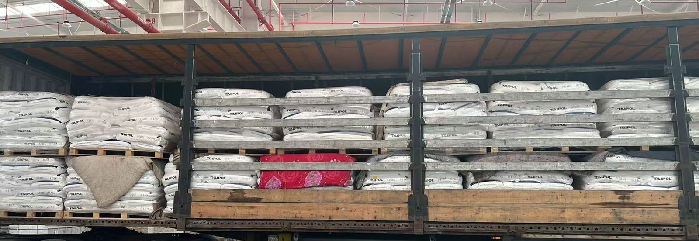

TERMS
Hub-to-customs, not door-to-door: China to Tehran West Customs on CPT / DAP, not DDP
Many quotes on this lane bundle TIR, double-clearance, door delivery and a compressed day count together. Before you ask for a rate, be clear which leg you are buying. What we sell is the China-to-Iran hub-to-customs linehaul: the cargo is delivered into the Tehran West Customs bonded warehouse and handed over on a warehouse entry receipt. Clearance and duty are for the buyer's broker in Iran. Not DDP, not to the door.
- Hub-to-customs; trade terms CPT / DAP Tehran Customs; not door-to-door, not DDP
- Delivered into the Tehran West Customs (Gomrok Gharb) bonded warehouse; Iran clearance and duty are the consignee's licensed broker — we do not clear Iran customs
- The transit time is counted from the Wuqia crossing (currently 21–23 days to Tehran); the domestic leg is separate; Mashhad is quote-only with no day count
- No published rates. Send three things for a quote: origin hub; destination customs; HS code / gross weight kg / volume CBM
Where we deliver: hub-to-customs, not the door
The origin is a China consolidation hub: Yiwu (Suxi), Shenzhen (Pinghu), Guangzhou (Baiyun), Shanghai; or handover at the exit-gateway supervised zone. Departures are Tuesday and Friday from Yiwu and Shenzhen (Pinghu); LCL from 1 CBM or 100 kg.
The destination is an Iranian customs bonded warehouse. The main handover point is Tehran West Customs (Gomrok Gharb); Aprin Dry Port and Shahriyar can also be arranged; Mashhad Customs is quote-only with no day count.
Trade terms are written CPT / DAP Tehran Customs. Hub-to-customs means we deliver the leg up to customs; we are not responsible for the buyer's warehouse or door, and we do not clear Iran customs.

CPT/DAP vs DDP: who does what
| Item | Our hub-to-customs (CPT/DAP customs) | Common DDP / double-clearance pitch |
|---|---|---|
| Handover point | A customs bonded warehouse such as Tehran West Customs | Often promises the buyer's warehouse or door |
| Iran clearance & duty | The buyer's licensed broker | Often claimed to be handled by the carrier |
| Do we clear Iran customs | No | — |
| Transit figure | Currently 21–23 days from the Wuqia crossing to the Tehran West Customs bonded warehouse (plus the domestic leg, counted separately) | Compressed door-to-door claims (do not treat as verified) |
The table is only for drawing the boundary. Do not copy another party's day count into our rate.
On arrival: who gets the warehouse entry receipt
Once the cargo is unloaded into the customs bonded warehouse, it is handed over on a warehouse entry receipt (Ghabz-e Anbar / قبض انبار) to the consignee's nominated broker, who then pays duty and obtains release. Iran's customs system is ASYCUDA — noted here, not a clearance tutorial.
You need to confirm three things: which customs warehouse the cargo reaches, who issues the entry receipt, and who handles clearance. The hub-to-customs service answers the first two; the third sits on the buyer's side.
The day count covers one leg only
The transit time is counted from the Wuqia crossing: currently 21–23 days to the Tehran West Customs bonded warehouse. The domestic leg (typically within 7 days) is counted separately. Not the door, not DDP, not sea. Mashhad is quoted on request with no day count.
A TIR carnet is a customs seal at origin plus one carnet; fewer openings and truck changes in transit — fewer, not none. TIR does not shorten the transit and does not lower the freight.
Exit and entry
Two lines are live: the Wuqia line via Kyrgyzstan then Uzbekistan, and the Khorgos line via Kazakhstan then Uzbekistan. Both cross Turkmenistan and enter Iran at Sarakhs. Turgart and Alashankou are not operated.
Footnote: the Wuqia line (Kyrgyzstan) carries a 0.4% invoice-value tax — a tax, not freight, billed separately; the Khorgos line does not add it. The China–Kyrgyzstan–Uzbekistan railway is under construction and not open; Iran cargo still moves by road.
A quote needs three things
- Origin hub (Yiwu / Shenzhen Pinghu / Guangzhou / Shanghai, or the Khorgos supervised zone)
- Destination customs (Tehran West Customs / Aprin / Mashhad)
- HS code, gross weight in kg, volume in CBM
No published rates. To get a quote, send three things: the origin hub; the destination customs (Tehran West Customs / Aprin / Mashhad); and the cargo data — HS code, gross weight in kg, volume in CBM.
sales@chinairantrucks.com · WhatsApp +86 132 3740 1856 · Telegram @Aliboby88
FAQ
Do you do DDP or door-to-door double-clearance?
No. We run hub-to-customs on CPT / DAP Tehran Customs terms. The cargo is delivered into a customs bonded warehouse such as Tehran West Customs, and Iran clearance and duty are handled by the buyer's licensed broker.
Who clears customs?
The buyer's licensed broker, at the destination customs. We do not clear Iran customs.
Where does the transit time end?
At the Tehran West Customs bonded warehouse. The transit time is counted from the Wuqia crossing and is currently 21–23 days to Tehran; the domestic leg is counted separately. Not the door. Mashhad is quote-only with no day count.
What document do we get on arrival?
A warehouse entry receipt (Ghabz-e Anbar), handed to the consignee's nominated broker, who continues with declaration and release.
Is TIR faster or cheaper?
A TIR carnet means fewer openings and truck changes in transit — fewer, not none. It does not shorten the transit and does not lower the freight.
How many days to Mashhad?
Mashhad is quote-only with no day count. Freight is quoted on request.
Related: The transit time is to customs, not your door · Choosing your Iran customs broker · How to request a quote · How TIR works on the corridor